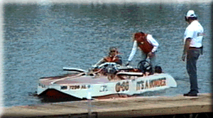
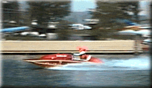
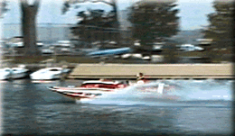
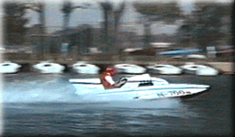
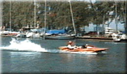

During the event, Vintage racing boats from past decades perform occasional exhibition runs. In 1995, vintage boats included the 1939 hydroplane "IT'S A WONDER", along with "MISS WASHINGTON D.C.", "WA-HOO TOO", and a static display of Guy Lombardo's 'TEMPO VII'. (Photo copyright Brian Reed)
Detroit native Tom D'eath is the THUNDERFEST Vintage & Historic Chairman. He is a three time Gold Cup winner, once in 1976 in the Miss U.S, and again in 1989 & 90 in the Miss Budweiser.
Other vintage boats as they enter and exit the Belle Isle pit area:




 Return to the What Is A Hydroplane page.
Return to the What Is A Hydroplane page.
All contents Copyright © 1997 Spirit of Detroit THUNDERFEST, except where noted.
Web page created by Brian Reed.
 Return to the Top THUNDERFEST page.
Return to the Top THUNDERFEST page.
All Rights Reserved.